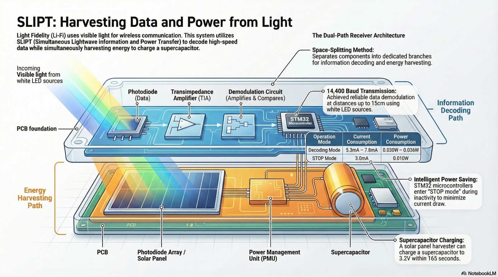
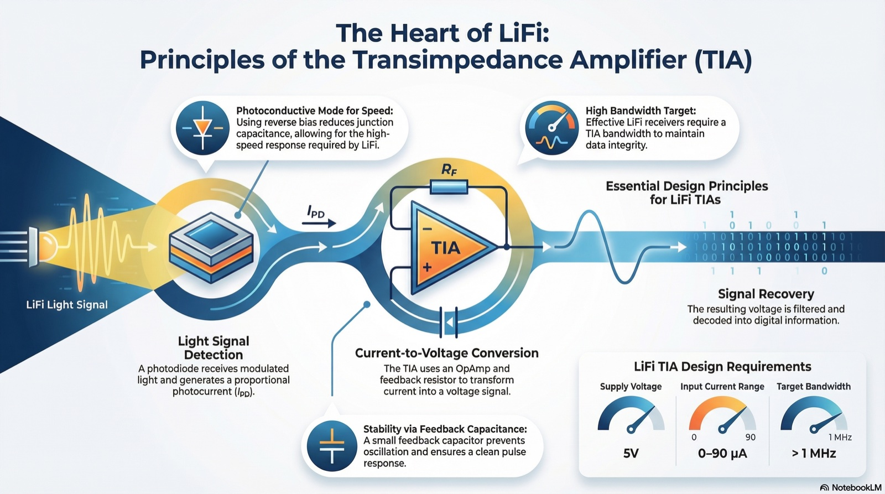
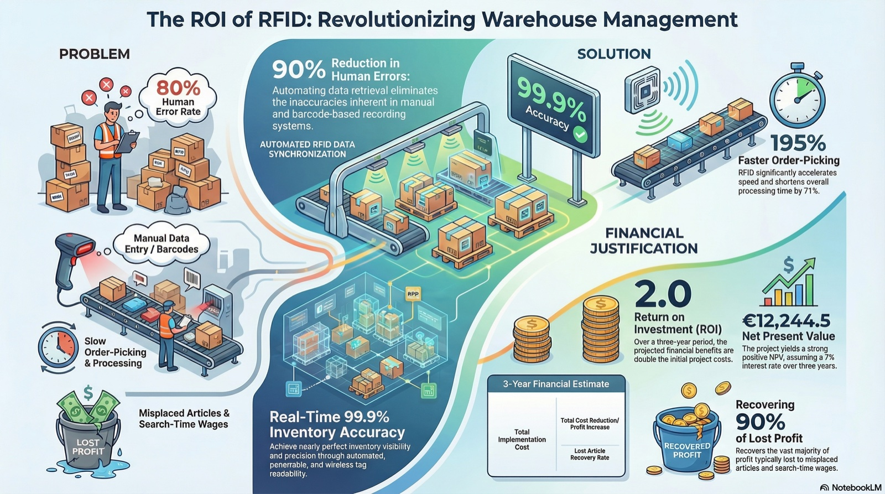
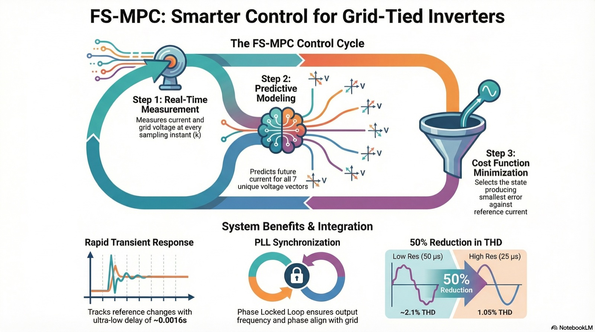

My Master's thesis explored how to use light for both wireless data communication and energy generation, a concept known as Light Fidelity (Li-Fi) combined with Simultaneous Lightwave Information and Power Transfer (SLIPT).
To build the light transmitter, I programmed a Raspberry Pi Pico using MicroPython within the Thonny development environment.
I also utilized LTSpice software to design and simulate complex receiver circuits before building a physical prototype.
For the receiver's brain, I programmed an STM32-Nucleo microcontroller to efficiently decode the incoming data signals while running in a low-power state.
Ultimately, my real-world prototype proved the concept works by successfully decoding data at distances up to 15 cm while simultaneously harvesting microwatts of free energy from standard LEDs.

My Master's project involved designing and evaluating a transimpedance amplifier (TIA) to quickly convert incoming light signals into electrical data.
To ensure the amplifier was fast and stable, I verified my mathematical designs through software simulations and physical hardware experiments. I used LTSpice and MATLAB to simulate the circuit and analyze its performance.
For the real-world testing, I utilized an Analog Discovery 3 device with Waveforms software to measure signals, alongside a Raspberry Pi Pico programmed via Thonny to generate the light pulses.

This project explored how RFID can improve warehouse and inventory management through real-time tracking, fewer manual errors, and better process visibility. I supported the work by creating a Tableau dashboard to analyze missing articles and highlight inventory-related losses. The study also included cost, risk, and ROI analysis, showing that RFID implementation could deliver clear operational and financial benefits.

In my Bachelor's thesis, I developed a control strategy to smoothly synchronize local renewable energy sources, like solar or wind power, with the main electrical grid using Finite State Model Predictive Control (FS-MPC).
I designed a three-phase grid-tied inverter that utilizes a Phase Locked Loop (PLL) to precisely match the grid's voltage phase and frequency.
To build the system models, program the predictive algorithms, and simulate the inverter's performance, I utilized MATLAB and Simulink.